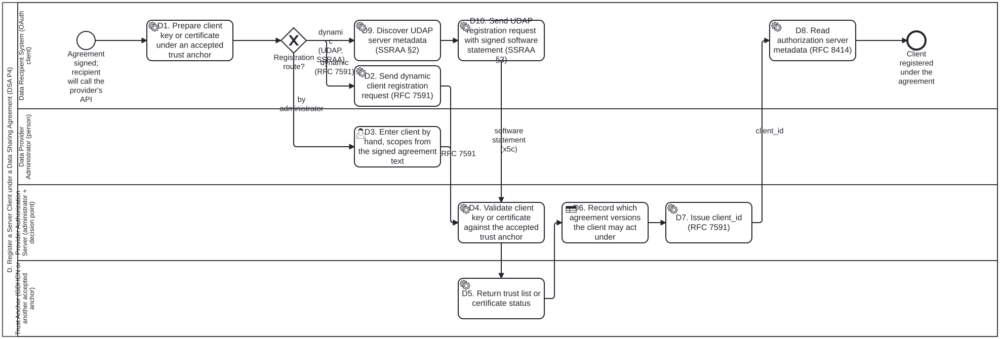

Generated from
smart-trust-phw/input/business-processes/PHW.D.bpmnbygen-processes-viz.ts— do not edit here. All processes · smart-trust-phw processes
D. Register a Server Client under a Data Sharing Agreement (DSA P4)
PHW.D · strict (defaulted) · 9 step(s)
Registers the data recipient’s server as an OAuth client of the data provider. The client is registered dynamically, by RFC 7591 or by UDAP Dynamic Client Registration as profiled by HL7 SSRAA (X.509 certificate-based, which fits a national X.509 PKI as the trust anchor), or it is entered by an administrator. It authenticates with mutual TLS (RFC 8705) or a JWT client assertion (RFC 7523; on the UDAP route, private_key_jwt with an x5c certificate chain, SSRAA §5.2), using a key published under a trust anchor the agreement accepts, and the server records which agreement versions the client may act under. Trust-anchor neutral: WHO GDHCN is one accepted anchor among others (a national X.509 PKI, the party’s own did:web, or a local list); UDAP, as profiled by HL7 SSRAA (Security for Scalable Registration, Authentication, and Authorization IG), is approved for X.509 certificate-based registration and authentication (owner, 2026-10-30 20:28Z), and OpenID Federation is out of scope. Source: the data sharing agreement (DSA) process analysis for litlfred/folio-assistant#2702, §2 and §4.
Not run by the engine. This diagram draws 1 element(s) the process interpreter does not implement. They are shown on the diagram and listed here, but
workflow_startrefuses to run this process until the interpreter supports them.
| element | type | on |
|---|---|---|
| D6. Record which agreement versions the client may act under | bpmn:BusinessRuleTask | — |

How it connects
- Called by: no call activity names this process
- Calls: none
- Presented on: no docs page section shows this diagram
- Running instances: none recorded
Lanes — who acts
| lane | role | what it does here |
|---|---|---|
| Data Recipient System (OAuth client) | — | The data recipient’s server: the ODRL assignee of the agreement (ODRL 2.2 §2.1.3) and the OAuth client (RFC 6749 §1.1 (section from standing knowledge, unverified)). |
| Data Provider Administrator (person) | — | A person at the data provider who configures systems by hand. This is the only route when the agreement is document-only (a signed PDF with no ODRL). |
| Provider Authorization Server (administrator + decision point) | — | The provider’s OAuth authorization server (RFC 6749 §1.1 (section from standing knowledge, unverified)). In NIST SP 800-207 terms it is the policy administrator. It is grouped with the policy decision point that runs process F. |
| Trust Anchor (GDHCN or another accepted anchor) | — | Any trust anchor the agreement accepts. Trust-anchor neutral: WHO GDHCN is one accepted anchor among others (a national X.509 PKI, the party’s own did:web, or a local list); UDAP, as profiled by HL7 SSRAA (Security for Scalable Registration, Authentication, and Authorization IG), is approved for X.509 certificate-based registration and authentication (owner, 2026-10-30 20:28Z), and OpenID Federation is out of scope. |
Steps
Every one of the 9 step(s) is documented.
| step | lane | skill / sub-process | what it does |
|---|---|---|---|
D1. Prepare client key or certificate under an accepted trust anchorPHW.D.1 | Data Recipient System (OAuth client) | — | The recipient uses a key pair or X.509 certificate already published under a trust anchor the agreement accepts (DSA P3). Trust-anchor neutral: WHO GDHCN is one accepted anchor among others (a national X.509 PKI, the party’s own did:web, or a local list); UDAP, as profiled by HL7 SSRAA (Security for Scalable Registration, Authentication, and Authorization IG), is approved for X.509 certificate-based registration and authentication (owner, 2026-10-30 20:28Z), and OpenID Federation is out of scope. |
D2. Send dynamic client registration request (RFC 7591)PHW.D.2 | Data Recipient System (OAuth client) | — | Client registration request (RFC 7591 §3.1 (section from standing knowledge, unverified)). For private_key_jwt, the metadata carries jwks or jwks_uri (RFC 7523 §2.2 (section from standing knowledge, unverified)). For mutual TLS, it carries tls_client_auth and the certificate subject (RFC 8705 §2.1 (section from standing knowledge, unverified)). RFC 7592 (registration management) is Experimental and needs owner approval before use. |
D9. Discover UDAP server metadata (SSRAA §2)PHW.D.9 | Data Recipient System (OAuth client) | — | UDAP route. The client sends GET {baseURL}/.well-known/udap to the provider’s FHIR server, without client authentication (HL7 SSRAA 2.0.0 §2.1). The response is UDAP metadata as per UDAP Server Metadata STU1 §1, with the elements of SSRAA §2.2 (for example udap_versions_supported, registration_endpoint, token_endpoint, udap_certifications_required) and the signed_metadata JWT of SSRAA §2.3, which the client validates against its trust community. A 404 Not Found means the server does not support UDAP. Where the server serves more than one trust community, SSRAA §2.4 applies. UDAP approved by the owner, 2026-10-30 20:28Z. |
D10. Send UDAP registration request with signed software statement (SSRAA §3)PHW.D.10 | Data Recipient System (OAuth client) | — | UDAP route. The client POSTs software_statement, optional certifications, and udap = 1 to the registration_endpoint (HL7 SSRAA 2.0.0 §3.2.3; UDAP Dynamic Client Registration STU1 §2). The software statement is a JWT signed with the private key of the client’s X.509 certificate, which is carried in the x5c header (SSRAA §3.1, §7.1.3). Its claims are those of SSRAA §3.1: iss and sub (the client URI, which SHALL match a uniformResourceIdentifier Subject Alternative Name in the certificate), aud, exp (at most 5 minutes after iat), iat, jti, client_name, contacts, grant_types (client_credentials for a server client), token_endpoint_auth_method = private_key_jwt, and scope. Certifications and endorsements are optional unless the server lists them in udap_certifications_required (SSRAA §3.3; UDAP Certifications and Endorsements for Client Applications STU1). A later request with the same iss from the same trust community modifies the registration, and an empty grant_types cancels it (SSRAA §3.4). |
D3. Enter client by hand, scopes from the signed agreement textPHW.D.3 | Data Provider Administrator (person) | — | Document-only route (and always allowed): the administrator registers the client_id, the mTLS certificate or JWKS, and scopes that match what the agreement allows. The change record cites the agreement’s fixed-version URL and its SHA-256. |
D4. Validate client key or certificate against the accepted trust anchorPHW.D.4 | Provider Authorization Server (administrator + decision point) | — | The authorization server checks that the client’s key or certificate chains to, or is listed by, a trust anchor the agreement accepts: a DID document (did:web), an RFC 5280 certification path (§6 (section from standing knowledge, unverified)), or a local list. On the UDAP route it validates the registration request as per UDAP Dynamic Client Registration STU1 §4, as HL7 SSRAA 2.0.0 §3.2.3 requires: the software statement’s JWT payload and signature, the x5c certificate chain to an anchor of the trust community (for example a national X.509 PKI), and the requested registration parameters. |
D5. Return trust list or certificate statusPHW.D.5 | Trust Anchor (GDHCN or another accepted anchor) | — | The trust anchor serves its signed trust list or certificate revocation list. GDHCN: did:web:tng-cdn.who.int:v2:trustlist with a JsonWebSignature2020 proof. X.509: CRL (RFC 5280 §5 (section from standing knowledge, unverified)). |
D7. Issue client_id (RFC 7591)PHW.D.7 | Provider Authorization Server (administrator + decision point) | — | Client information response with the client_id (RFC 7591 §3.2.1 (section from standing knowledge, unverified)), or the administrator hands it over. On the UDAP route the response is 201 Created as per UDAP Dynamic Client Registration STU1 §5.1, or an error as per §5.2 (HL7 SSRAA 2.0.0 §3.2.3); a modification returns the same client_id, usually with 200 OK (SSRAA §3.4). |
D8. Read authorization server metadata (RFC 8414)PHW.D.8 | Data Recipient System (OAuth client) | — | The client reads the server’s metadata (RFC 8414 §3 (section from standing knowledge, unverified)): token endpoint, supported client authentication methods and DPoP signing algorithms. On the UDAP route the endpoints were already read from the UDAP metadata in D9, and the client authenticates at the token endpoint with a private_key_jwt Authentication Token carrying x5c and, for client_credentials, the hl7-b2b extension (SSRAA §5.2.1, §5.2.2). |
Decisions
Every one of the 1 decision(s) is documented.
| decision | what decides it | branches |
|---|---|---|
Registration route?PHW.D.Gateway1 | Dynamic registration by RFC 7591, dynamic registration by UDAP as profiled by HL7 SSRAA (§3), or registration by an administrator. Each is valid. UDAP fits a recipient whose certificate is issued under a national X.509 PKI, or another X.509 trust community, that the agreement accepts. Only the administrator route exists for a document-only agreement. | dynamic (RFC 7591) → D2. Send dynamic client registration request (RFC 7591) by administrator → D3. Enter client by hand, scopes from the signed agreement text dynamic (UDAP, SSRAA) → D9. Discover UDAP server metadata (SSRAA §2) |